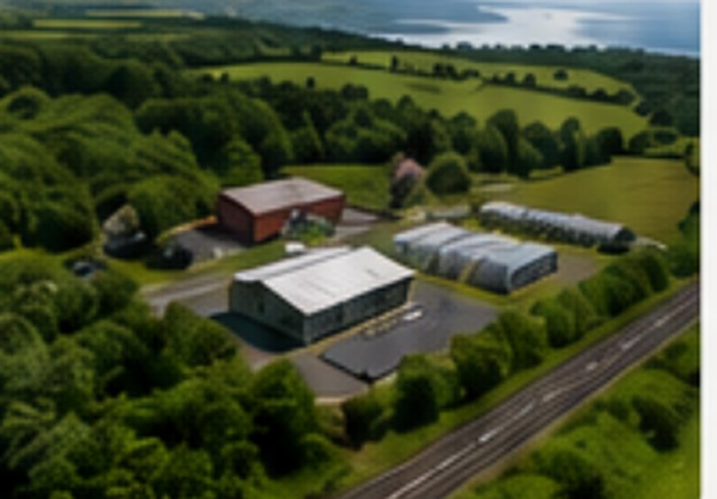

Biologging at the Edge
with IoSA
On-device EdgeAI models running directly on animal-borne biologging tags, enabling real-time behavioural and environmental inference without the power and bandwidth cost of transmitting raw sensor data.
Bangor University · School of Computer Science & Engineering × School of Environmental & Natural Sciences
Developing EdgeAI approaches for next-generation ecosystem monitoring — from the mountains of Eryri to the shores of the Menai Strait.
About the collaboration
Bangor University sits between the peaks of Eryri (Snowdonia) and the tidal waters of the Menai Strait — a landscape that has shaped decades of ecological field research. This initiative brings that field expertise together with embedded machine learning research, so that ecosystems can be monitored continuously, in place, without the cost and disturbance of constant data transmission.
The partnership is jointly led by the School of Environmental and Natural Sciences and the School of Computer Science and Engineering at Bangor University. Together we are designing, training and deploying compact AI models that run directly on low-power field hardware — biologging tags, acoustic sensors and bespoke edge devices — turning raw sensor streams into ecological insight at the point of collection.
Research themes
Four connected strands of work, spanning wildlife tagging, bioacoustics and low-power hardware.
with IoSA
On-device EdgeAI models running directly on animal-borne biologging tags, enabling real-time behavioural and environmental inference without the power and bandwidth cost of transmitting raw sensor data.
Nordic Semiconductor hardware
Ultra-Low-power acoustic detectors built on Nordic platforms, running compact neural networks for continuous, in-field bioacoustic monitoring over long deployments.
RESTOREID · Horizon Europe
Autonomous soundscape recorders that classify and summarise acoustic biodiversity on-device, developed as part of the RESTOREID Horizon Europe ecosystem-restoration project.
tinyML
Ultra-low-power, single-species detectors built with tinyML, designed for targeted monitoring of priority species in demanding field conditions.
Postgraduate research
Each year we co-supervise MSc research projects that sit across both schools, pairing ecological research questions with embedded machine learning methods. Students work with real field data — biologging tags, acoustic sensors and edge hardware — supervised jointly by academics in the School of Environmental and Natural Sciences and the School of Computer Science and Engineering.
It's a genuinely interdisciplinary project: expect fieldwork, real sensor data, and hands-on model development for constrained devices, alongside working with key stakeholders, not just a lab-based dissertation.
Ask about a joint MSc projectWalkshop · 17 September 2026
Developing EdgeAI approaches for next-generation ecosystem monitoring.
A one-day field-to-lab event bringing together researchers, stakeholders and end users to explore how EdgeAI technologies can enable next-generation ecosystem monitoring.
| 09:00 – 09:30 | Coffee & Registration |
| 09:30 – 12:30 | Guided Walk with Discussions |
| 12:30 – 13:30 | Lunch |
| 13:30 – 13:50 | Introduction to Edge AI and Ecology at Bangor; Lucinda Kirkpatrick |
| 13:50 – 14:10 | Invited Speaker: Dan Stowell, Leiden University, Ass. Professor in Computational Biodiversity |
| 14:10 – 14:30 | Coffee Break |
| 14:30 – 15:30 | Breakout Sessions Three parallel discussions, 20 + 10 minutes each |
| 15:30 – 16:00 | Coffee Break |
| 16:00 – 16:45 | Panel Discussion |
| 16:45 – 17:00 | Closing Remarks / Wrap-up |

Menterra at Henfaes Research Centre, Bangor
A living laboratory for sustainability, innovation and collaboration.
Return bus / minibus provided from Main Arts to the Henfaes venue.
As there is a limited number of spaces, please register using the link below and contact us to make sure there is space for you.
walkshop2026.eventbrite.co.uk Download the flyer (PDF)Delivered with